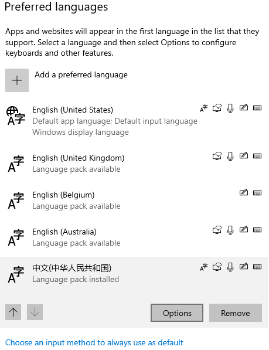
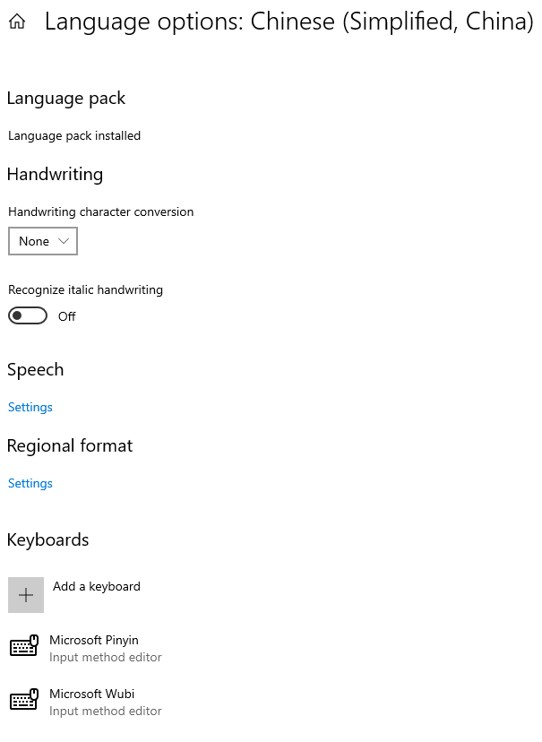
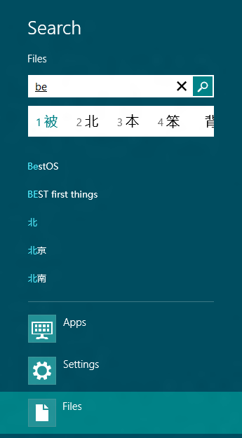

Custom Input Method Editor (IME) requirements
These guidelines and requirements can help you to develop a custom Input Method Editor (IME) to help a user input text in a language that can't be represented easily on a standard QWERTY keyboard.
For an overview of IMEs, see Input Method Editor (IME).
Default IME
A user can select any of their active IMEs (Settings -> Time & Language -> Language -> Preferred languages -> Language pack - Options) to be the default IME for their preferred language.

Select the default keyboard on the Language options settings screen for the preferred language.

Important
We do not recommend writing directly to the registry to set the default keyboard for your custom IME.
Compatibility requirements
The following are the basic compatibility requirements for a custom IME.
IME must be compatible with Windows apps
Use the Text Services Framework (TSF) to implement IMEs. Previously, you had the option of using the Input Method Manager (IMM32) for input services. Now the system blocks IMEs that are implemented by using Input Method Manager (IMM32).
When an app starts, TSF loads the IME DLL for the IME that's currently selected by the user. When an IME is loaded, it's subject to the same app container restrictions as the app. For example, an IME can't access the Internet if an app hasn't requested Internet access in its manifest. This behavior ensures that IMEs can't violate security contracts.
TSF is the intermediary between the app and your IME. TSF communicates input events to the IME and receives input characters back from the IME after the user has selected a character.
This behavior is the same as previous versions of Windows, but being loaded into a Windows app affects the potential capabilities of an IME.
If your IME needs to provide different functionality or UI between Windows apps and desktop apps, ensure that the DLL that’s loaded by TSF checks which type of app it's being loaded into. Call the ITfThreadMgrEx::GetActiveFlags method in your IME and check the TF_TMF_IMMERSIVEMODE flag, so your IME triggers different application logic depending on the result.
Windows apps do not support Table Text Service (TTS) IMEs.
Note
Some tools for generating TTS IMEs produce IMEs that are marked as malware by Windows.
IME must be compatible with the system tray
There is no language bar to host IME icons. Instead, an Input Indicator shows on the system tray that indicates the current input option. The Input Indicator shows only the IME branding icon to indicate the currently running IME. Also, there's one IME mode icon that shows on the left of the IME branding icon for users to perform the most commonly used IME mode switch, like turning the IME on or off.
The Input Indicator shows the IME branding icon and mode icon only for compatible IMEs. IMEs that aren't compatible don't have the branding icon and mode icon displayed in the system tray. Instead, the Input Indicator shows the language abbreviation instead of the IME branding icon.
Store the IME icons in a DLL or EXE file, instead of a standalone .ico file. The design of IME icons must follow the guidelines described in the following UI design guidelines section.
IME branding icon
The Input Indicator gets the IME branding icon from the IME DLL by using the resource ID defined by the IME when it was registered on the system.
IME mode icon
Some IMEs may need to rely on the Input Indicator showing on the system tray to display the IME mode icon. In this case, the IME passes the IME mode icon to the Input Indicator by using GUID_LBI_INPUTMODE.
When passing the IME mode icons to the Input Indicator on the system tray, the default size of the IME mode icon is 16x16 pixels. The UI scaling follows DPI.
When passing the IME mode icon to the Input Indicator on UAC (User Account Control in Secure Desktop), the default size of the IME mode icon is 20x20 pixels. The UI scaling for IME mode icon on UAC follows PPI.
IME must work in app container
Some IME functions are affected in an app container.
- Dictionary Files - Frequently, IMEs have read-only dictionary files to map user input to specific characters. To access these files from inside an app container, your IME must place them under the Program Files or Windows directories. By default, these directories can be read from an app container, so IMEs can access dictionary files that are stored in these locations. If your IME must store the dictionary file somewhere else, it must explicitly manipulate the Access Control Lists (ACL) of the dictionary files to allow access from app containers.
- Internet Updating - If your IME needs to update its dictionaries using data from the Internet, it can't reliably do so inside an app container, because Internet access isn't always permitted. Instead, your IME should run a separate desktop process that's responsible for updating the dictionary files with data from the Internet.
- On-the-fly learning - If an IME is running in an app container that has Internet access, there's no restriction on the endpoints that the IME can communicate with. In this case, an IME can use a cloud server to provide on-the-fly learning services. Some IMEs download and upload user input on the fly, while the user is typing. Since Internet access is not guaranteed in an app container, this may not always be allowed.
- Sharing information between processes - IMEs may need to share data about the user’s input preferences between apps that are in different app containers. Use a web service to share data between apps.
Important
If you try to circumvent app container security rules, your IME may be treated as malware and blocked.
IME and touch keyboard
Your IME must ensure that its candidate pane's UI, and other UI elements, aren't drawn underneath the touch keyboard. The touch keyboard is displayed in a higher z-order band than all apps, and the IME UI is displayed in the same z-order band as the app it's active in. As a result, the touch keyboard can overlap and hide the IME UI. In most cases, the app should resize its window to account for the touch keyboard. If an app doesn't resize, the IME still can use the InputPane API to get the position of the touch keyboard. The IME queries the Location property, or it registers a handler for the touch keyboard's Show and Hide events. The Show event is raised every time the user taps in an edit field, even if the touch keyboard is displayed currently. Your IME can use this API to get the screen space used by the touch keyboard before the IME draws candidate (or other) UI, and to reflow the IMEs UI to avoid drawing beneath the touch keyboard.
Specifying the preferred touch keyboard layout
The IME can specify which touch keyboard layout to use, and the IME is enabled to work with touch-optimized layouts. This functionality is limited to IMEs for the Korean, Japanese, Chinese Simplified, and Chinese Traditional input languages.
There are seven layouts supported by the touch keyboard, three of which are classic layouts and four of which are touch-optimized layouts. The classic layouts look and behave like a physical keyboard.
All of the three classic layouts are for inputting traditional Chinese in different forms:
- Phonetic-based input
- Changjie input
- Dayi input
In addition to the classic layouts, there is one touch-optimized layout for each of the Korean, Japanese, Simplified Chinese, and Traditional Chinese input languages.
To use this functionality, your IME must implement the ITfFnGetPreferredTouchKeyboardLayout interface, which is exported by the IME by using the Text Services Framework ITfFunctionProvider API.
If your IME doesn't support the ITfFnGetPreferredTouchKeyboardLayout interface, using the IME results in the default classic layout for the language that is displayed by the touch keyboard.
If your IME needs to set one of the classic layouts as the preferred layout, no additional work is required on the IME side beyond supporting the ITfFnGetPreferredTouchKeyboardLayout and ITfFunctionProvider interfaces. But additional work is required in the IME to work with the touch-optimized layouts, and this is described in the next section.
Touch-optimized layout
The touch-optimized keyboards for the Korean, Japanese, Simplified Chinese, and Traditional Chinese input languages display a different layout for IME On and IME Off conversion modes. There's a key on the touch keyboard to set the IME conversion mode to On or Off, but the IME mode of the keyboard also may change as focus changes among edit controls.
The touch-optimized keyboards for the Japanese, Simplified Chinese, and Traditional Chinese input languages contain a key, or keys, which the IME uses to navigate through candidate pages. For Japanese and Simplified Chinese, the candidate page key displays on the touch-optimized layout. For Traditional Chinese, there are separate keys for the previous and next candidate pages.
When these keys are pressed, the touch keyboard calls the SendInput function to send the following Unicode Private Use Area characters to the focused application, which the IME can intercept and act on:
- Next page (0xF003) - Sent when the candidate page key is pressed on the touch-optimized keyboard for Japanese and Simplified Chinese, or when the next page key is pressed on the touch-optimized keyboard for Traditional Chinese.
- Previous page (0xF004) - Sent when either the candidate page key is pressed at the same time as the Shift key on the touch-optimized keyboard for Japanese and Simplified Chinese, or when the previous page key is pressed on the touch-optimized keyboard for Traditional Chinese.
These characters are sent as Unicode input. The next paragraph details how to extract the character information during the key event sink notifications that the Text Services Framework IME will receive. These character values are not defined in any header file, so you will need to define them in your code.
To intercept keyboard input, your IME must register as a key event sink. For Unicode input that is generated by using the SendInput function, the WPARAM parameter of the ITfKeyEventSink callbacks (OnKeyDown, OnKeyUp, OnTestKeyDown, OnTestKeyUp) always contains the virtual key VK_PACKET and doesn't identify the character directly.
Implement the following call sequence to access the character:
// Keyboard state
BYTE abKbdState[256];
if (!GetKeyboardState(abKbdState))
{
return 0;
}
// Map virtual key to character code
WCHAR wch;
if (ToUnicode(VK_PACKET, 0, abKbdState, &wch, 1, 0) == 1)
{
return wch;
}
IME search integration
Provide users with search features through the search contract and integration with the search pane.

Search pane and IME suggestions
The search pane is a central location for users to perform searches across all of their apps. For IME users, Windows provides a unique search experience that lets compatible IMEs integrate with Windows for greater efficiency and usability.
Users who type with an IME that's compatible with search get two main benefits:
- Seamless interaction between the IME and the search experience. IME candidates are shown inline under the search box without occluding search suggestions. The user can use the keyboard to navigate seamlessly between the search box, the IME conversion candidates, and the search suggestions.
- Faster access to relevant results and suggestions provided by applications. The app has access to all current conversion candidates to provide more relevant suggestions. To better prioritize search suggestions, conversions are given to apps in order of relevance. Users find and select the result they want without converting, just by typing in phonetic.
An IME is compatible with the integrated search experience if it meets the following criteria:
- Compatible with the Windows style shell.
- Implement the TSF UILess mode APIs. For more info, see UILess Mode Overview.
- Implement the TSF search integration APIs, ITfFnSearchCandidateProvider and ITfIntegratableCandidateListUIElement.
When activated in the search pane, a compatible IME is placed in UIless mode and can't show its UI. Instead, it sends conversion candidates to Windows, which displays them in the inline candidate list control, as shown in the previous screenshot.
Also, the IME sends candidates that should be used to run the current search. These candidates could be the same as the conversion candidates, or they could be tailored for search.
Good search candidates meet the following criteria:
- No prefix overlap. For example, 北京大学 and北京 are redundant because one is a prefix of the other.
- No redundant candidates. Any redundant candidate isn't useful for search because it doesn't help filter results. For example, any result that matches 北京大学 also matches 北京.
- No prediction candidate, only conversion. For example, if the user types "be", the IME can return 北 as a candidate, but not 北京大学. Usually, prediction candidates are too restrictive.
IMEs that don't meet the criteria aren't compatible with search display in the same way as other controls, and can't take advantage of UI integration and search candidates. Apps receive queries only after the user has finished composing.
When an app that supports the search contract receives a query, the query event contains a "queryTextAlternatives" array that contains all known alternatives, ranked from the most relevant (likely) to least relevant (unlikely).
When alternatives are provided, the app should treat each alternative as a query and return all results that match any of the alternatives. The app should behave as if the user had issued multiple queries at the same time, essentially issuing an "or" query to the service providing the results. For performance considerations, apps often limit matching to between 5 and 20 of the most relevant alternatives.
UI design guidelines
All IMEs must follow the user experience guidelines described in Design and code Windows apps.
Don't use sticky windows
Your IME windows should appear only when needed, and they shouldn't be visible all the time. When users don't need to type, IME windows shouldn't show. The IME window shouldn't be a full screen window. IME windows shouldn't overlap each other. The windows should be designed in a Windows style and follow UI scaling.
IME icons
There are two kinds of IME icons, branding icons and mode icons. All IME icons must be designed with black and white colors only. The new IME icons borrow from the glyphic look of the system tray icons. This style has been created so all languages can use it to complement the familial look while also differentiating from each other.
The file format for IME icons is ICO. You must provide the following icon sizes.
- 16x16 pixels
- 20x20 pixels
- 24x24 pixels
- 32x32 pixels
- 40x40 pixels
- 48x48 pixels
Ensure that 32-bit icons with alpha channel are provided in all resolutions.
IME brand icons are defined by a white box in which a typographic glyph rendered in a modern typeface is placed. Each defining glyph is chosen by each language team. The glyph is black. The box includes an outer stroke of 1 pixel in black at 50% opacity. "New" versions are defined by a rounded corner in the upper left of the box.
IME mode icons are defined by a white typographic glyph in a modern typeface which includes an outer stroke of 1 pixel in black at 50% opacity.
| Icon | Description |
|---|---|
| Example IME brand icon for Traditional Chinese ChangeJie. | |
| Example IME brand icon for Traditional Chinese ChangeJie. | |
| Example IME mode icon. |
Owned window
To display candidate UI, an IME must set its window to be owned-window, so it can display over the currently running app. Use the ITfContextView::GetWnd method to retrieve the window to own to. If GetWnd returns an error or a NULLHWND, call the GetFocus function.
if (FAILED(pView->GetWnd(&parentWndHandle)) || (parentWndHandle == nullptr)) { parentWndHandle = GetFocus(); }
IME candidate window interaction with light dismiss surfaces
The dismissal model for popup windows is called "light dismiss" because it's easy for a user to close such windows. For IMEs to function well in the Windows interaction model, the IME windows must participate in the light dismiss model.
In order to participate in the light dismiss model, your IME must raise three new Windows events by using the NotifyWinEvent function or a similar function. These new events are:
- EVENT_OBJECT_IME_SHOW - Raise this event when the IME becomes visible.
- EVENT_OBJECT_IME_HIDE - Raise this event when the IME is hidden.
- EVENT_OBJECT_IME_CHANGE - Raise this event when the IME moves or changes size.
Declaring compatibility
IMEs declare that they are compatible by registering the category GUID_TFCAT_TIPCAP_IMMERSIVESUPPORT for their IME using ITfCategoryMgr::RegisterCategory.
Set the default IME mode to on
We provide a better UX for IMEs.
DPI scaling support for desktop applications
Enhanced DPI scaling support enables querying the declared DPI awareness level of each desktop process to determine if it needs to scale the UI. In a multi-monitor scenario, Windows scales the UI appropriately for different DPI settings on each monitor.
Because your IME runs in the context of each application's process, you shouldn't declare a DPI awareness level for your IME. This ensures that your IME runs at the DPI awareness level of the current process.
To ensure that all IME UI elements have scaling parity with the UI elements of the process in which you are running, you must respond appropriately to different DPI values.
Note
To ensure parity with new desktop applications, your IME should support per monitor–DPI awareness, but shouldn't declare a level of awareness itself. The system determines the appropriate scaling requirements in each scenario.
For details about DPI scaling support requirements for Desktop applications, see High DPI.
IME installation
If you build your IME by using Microsoft Visual Studio, create an installation experience for your IME by using a third-party installer, like InstallShield from Flexera Software.
The following steps show how to use InstallShield to create a setup project for your IME DLL.
- Install Visual Studio.
- Start Visual Studio.
- On the File menu, point to New and select Project. The New Project dialog opens.
- In the left pane, navigate to Templates > Other Project Types > Setup and Deployment, click Enable InstallShield Limited Edition, and click OK. Follow the installation instructions.
- Restart Visual Studio.
- Open the IME solution (.sln) file.
- In Solution Explorer, right-click the solution, point to Add, and select New Project. The Add New Project dialog opens.
- In the left tree view control, navigate to Templates > Other Project Types > InstallShield Limited Edition.
- In the center window, click InstallShield Limited Edition Project.
- In the Name text box, type "SetupIME" and click OK.
- In the Project Assistant dialog, click Application Information.
- Fill in your company name and the other fields.
- Click Application Files.
- In the left pane, right-click the [INSTALLDIR] folder, and select New Folder. Name the folder "Plugins".
- Click Add Files. Navigate to your IME DLL and add it to the Plugins folder. Repeat this step for the IME dictionary.
- Right-click the IME DLL and select Properties. The Properties dialog opens.
- In the Properties dialog, click the COM & .NET Settings tab.
- Under Registration Type, select Self-registration and click OK.
- Build the solution. The IME DLL is built, and InstallShield creates a setup.exe file that enables users to install your IME on Windows.
To create your own installation experience, call the ITfInputProcessorProfileMgr::RegisterProfile method to register the IME during installation. Don't write registry entries directly.
If the IME must be usable immediately after installation, call InstallLayoutOrTip to add the IME to user-enabled input methods, using the following format for the psz parameter:
<LangID 1>:{xxxxxxxx-xxxx-xxxx-xxxx-xxxxxxxxxxxx}{xxxxxxxx-xxxx-xxxx-xxxx-xxxxxxxxxxxx}
IME accessibility
Implement the following convention to make your IMEs conform to the accessibility requirements and to work with Narrator. To make candidate lists accessible, your IMEs must follow this convention.
- The candidate list must have a UIA_AutomationIdPropertyId equal to "IME_Candidate_Window" for lists of conversion candidates or "IME_Prediction_Window" for lists of prediction candidates.
- When the candidate list appears and disappears, it raises events of type UIA_MenuOpenedEventId and UIA_MenuClosedEventId, respectively
- When the current selected candidate changes, the candidate list raises a UIA_SelectionItem_ElementSelectedEventId. The selected element should have a property UIA_SelectionItemIsSelectedPropertyId equal to TRUE.
- The UIA_NamePropertyId for each item in the candidate list must be the name of the candidate. Optionally, you can provide additional information to disambiguate candidates through UIA_HelpTextPropertyId.